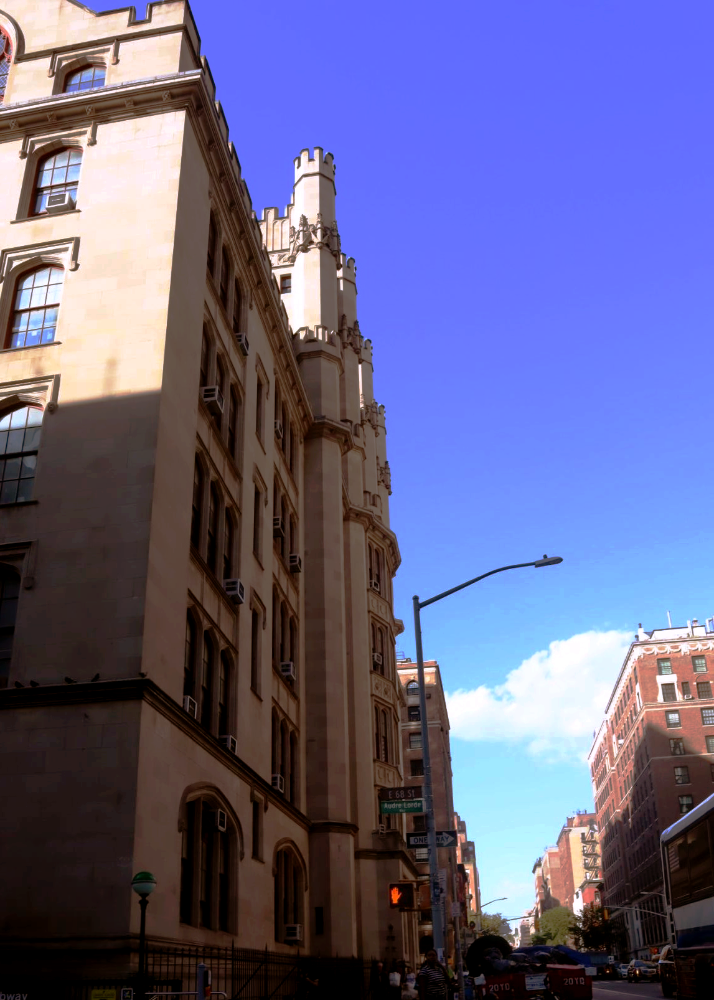

Here is the second image for Homework 2:The Hunter building (Thomas HunterHall) Took this picture because of the Gothic Revival style of the building.It looks pretty. :) For this image increased contrast, increased brightnes, added hue tint blue, costume propereties input:183 output: 191
